Portafolio de
Aprendizaje en Redes
Ocho premisas, un semestre de diagnósticos, diagramas, simulaciones y errores útiles. Documentamos cómo pensamos una red antes de construirla.
Por qué este portafolio
Este portafolio de aprendizaje recopila y evidencia los conocimientos, experiencias y habilidades que adquirimos durante el desarrollo de la asignatura Redes de Computadores, en el programa de Ingeniería de Sistemas.
Las redes de computadores son uno de los pilares fundamentales de la tecnología moderna: permiten la comunicación y el intercambio de información entre dispositivos, y hoy están presentes en prácticamente todos los ámbitos de la sociedad, desde hogares hasta empresas y organizaciones completas.
Durante la asignatura estudiamos tipos de redes, conexiones, direccionamiento y protocolos. En este portafolio documentamos esos aprendizajes junto con la información entregada por nuestro tutor, identificando dificultades en el proceso y reflexionando sobre la importancia de estos conceptos para la formación de un Ingeniero de Sistemas.
Al comenzar la asignatura buscábamos adquirir los conocimientos necesarios para comprender cómo funcionan las redes y cómo se comunican entre sí. A lo largo del corte fuimos identificando la información suficiente para retenerla y aplicarla en casos concretos: desde el diagnóstico de una institución educativa hasta el diseño de un campus universitario inteligente.
Thomas
Ingeniería de SistemasAndrés
Ingeniería de SistemasValerie
Ingeniería de SistemasConceptos fundamentales de redes
Una red de computadores es un conjunto de dispositivos conectados entre sí con el propósito de compartir información, recursos y servicios. Estos son los bloques conceptuales que sostienen cada premisa del portafolio.
Una red es un conjunto de computadoras enlazadas entre sí, junto con otros equipos de diferentes tamaños, conectados mediante medios físicos o inalámbricos, con el objetivo de compartir información, recursos y servicios.
Dispositivos
Dispositivos intermediarios que interconectan terminales en una red: routers, switches, puntos de acceso LAN.
Medios
El canal físico o inalámbrico que permite la mensajería desde el origen hasta el destino.
Servicios
Las aplicaciones y recursos que la red pone a disposición: Internet, correo, almacenamiento compartido, impresión en red. Son la razón por la que existe la red: dispositivos y medios solo tienen sentido si permiten ofrecer estos servicios.
PAN
Personal Area Network. Corto alcance, dispositivos personales, generalmente inalámbrica (Bluetooth).
LAN
Local Area Network. Conecta dispositivos en un área pequeña: vivienda, oficina, laboratorio.
MAN
Metropolitan Area Network. Conecta varias LAN dentro de una ciudad o zona metropolitana.
WAN
Wide Area Network. Gran extensión geográfica: países, continentes, ciudades distantes.
Cliente / Servidor
Un servidor centralizado administra usuarios y proporciona servicios o recursos a los dispositivos cliente.
Igual a igual (P2P)
Los dispositivos actúan como servidores y clientes al mismo tiempo; comparten recursos sin un servidor central.
Broadcast
Un dispositivo envía información y todos los conectados a la red la reciben al instante.
Punto a punto (PPP)
Comunicación directa entre dos dispositivos: un emisor y un receptor específico.
Simplex
Una sola dirección: un dispositivo transmite, el otro solo recibe.
Half Duplex
Ambas direcciones, pero no al mismo tiempo; los dispositivos se alternan.
Full Duplex
Ambas direcciones de forma simultánea: transmite y recibe a la vez con eficiencia.
Síncrona / Asíncrona
Síncrona: emisor y receptor coordinados. Asíncrona: no requiere conexión simultánea entre ambos.
Bus
Cable principal compartido; si falla, cae toda la red.
Anillo
Los dispositivos forman un círculo; una falla puede afectar la comunicación.
Estrella
Todos conectados a un nodo central: fácil de administrar, la más usada.
Árbol
Estructura jerárquica de varios niveles; conecta muchas redes de organización.
Malla
Múltiples caminos entre nodos; si falla uno, existen alternativas. Resistente a fallos.
Mixta
Combina dos o más topologías: más compleja, pero más flexible.
Medios guiados
Conexión mediante cable: estable y de alta velocidad.
Medios no guiados
La información viaja sin cable mediante ondas electromagnéticas: da movilidad, aunque puede sufrir interferencias.
Es un conjunto de pasos que ocurre para transmitir información: se envía y se recibe, siempre en presencia de ruido y contexto.
Método
La forma en que se establece y ejecuta la comunicación entre los dispositivos.
Lenguaje
El formato común que ambos extremos deben entender para intercambiar datos.
Confirmación
El mecanismo que garantiza que el mensaje fue recibido correctamente.
Codificación
La información se convierte en un formato aceptable para la transmisión.
Formato
Los mensajes dependen del tipo de mensaje y del canal usado para su entrega.
Tamaño
La codificación entre hosts debe compartir formato; los mensajes se convierten en bits.
Unidifusión (Unicast)
Comunicación de uno a uno.
Difusión (Broadcast)
De uno para todos los dispositivos de la red.
Multidifusión (Multicast)
De uno a muchos, aunque no todos los dispositivos pueden participar.
Direccionamiento
Identifica previamente a un emisor y un receptor.
Confianza
Proporciona una entrega garantizada de los datos.
Control de flujo
Garantiza un flujo de datos a una velocidad eficiente.
Secuenciación
Etiqueta de forma exclusiva cada segmento transmitido.
Detección de errores
Determina si los datos se dañaron durante la transmisión.
Interfaz de aplicación
Comunicación de proceso a proceso entre aplicaciones de red.
HTTP
Define contenido y formato de la interacción entre servidor web y cliente.
TCP
Administra el control de flujo y entrega garantizada de la información.
IP
Entrega mensajes de forma global, del remitente al receptor.
Ethernet
Entrega mensajes de una NIC a otra dentro de la misma red local (LAN).
El modelo OSI describe la comunicación en siete capas independientes; el modelo TCP/IP agrupa esas mismas funciones en cuatro. Selecciona una capa para ver su función.
Una red no es solo conectar dispositivos
La Institución Educativa Nuevo Horizonte cuenta con aproximadamente 800 estudiantes, 60 docentes y 30 funcionarios administrativos, distribuidos en tres bloques: el Bloque A (aulas y salas de profesores), el Bloque B (laboratorios de informática y biblioteca) y el Bloque C (oficinas administrativas, rectoría y coordinación).
Actualmente existen computadores, portátiles, tabletas, impresoras, cámaras de seguridad, teléfonos IP, televisores inteligentes y puntos de acceso inalámbrico — pero también problemas de conectividad, congestión en los laboratorios y necesidades futuras relacionadas con IoT y crecimiento de infraestructura.
- Cobertura insuficiente de Internet en algunas zonas.
- Congestión de la red en los laboratorios en horas pico.
- Necesidad de compartir información administrativa de forma segura.
- Conectividad permanente requerida para la biblioteca.
- Necesidad de conectar cámaras de seguridad y dispositivos IoT.
- Crecimiento futuro del número de usuarios y dispositivos.
Dentro de cada bloque usaríamos una LAN, ya que cada edificio es un espacio geográfico limitado; los tres bloques se mantendrían como una infraestructura LAN institucional con diferentes segmentos. Para los laboratorios propondríamos una topología en estrella, que facilita la administración: si un computador o cable falla, los demás equipos siguen funcionando.
Los dispositivos de usuario funcionan como clientes; los servicios compartidos —archivos, web, DNS, DHCP y autenticación— se centralizan en servidores. Para el cableado usaríamos cobre dentro de aulas y laboratorios, fibra óptica entre bloques, y Wi-Fi para los dispositivos móviles.
Proyección: la red se diseña pensando en el crecimiento futuro, dejando puertos disponibles en los switches, capacidad adicional en los enlaces y espacio para nuevos puntos de acceso, cámaras y dispositivos IoT — sin obligar a reemplazar la infraestructura existente.
Conclusión: una red no consiste simplemente en conectar dispositivos. Es necesario analizar las necesidades y seleccionar correctamente dispositivos, medios, topologías, servicios y mecanismos de seguridad, para diseñar una solución funcional hoy y capaz de crecer mañana.
Con esta premisa aprendimos a diferenciar los tipos de red (LAN, MAN, WAN) según el alcance y a elegir la topología adecuada según el contexto — como la topología en estrella para los laboratorios. También comprendimos la diferencia entre cliente/servidor y P2P, y por qué en una institución de este tamaño conviene centralizar los servicios: diseñar una red no es solo "conectar cables", es tomar decisiones justificadas según las necesidades reales de los usuarios.
Producto multimodal — Cómic
Entregado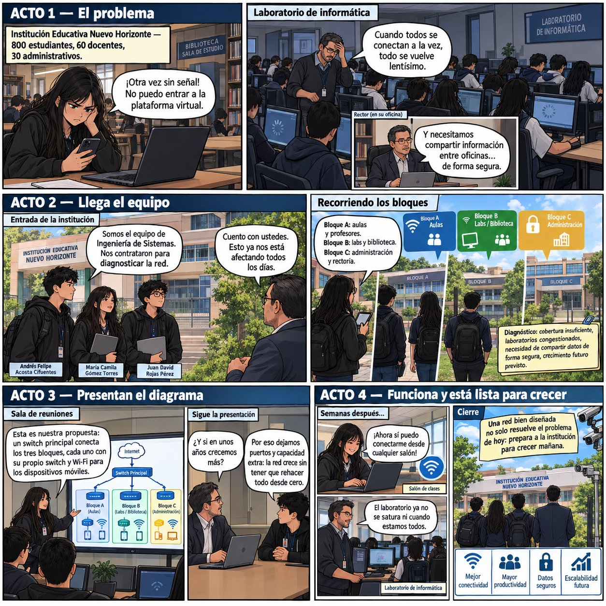
Internet: ¿una solución tecnológica que transformó la sociedad?
Internet comenzó como una tecnología destinada a conectar sistemas y compartir información, pero con el tiempo se convirtió en una infraestructura fundamental para la sociedad, cambiando la manera en que las personas estudian, trabajan, se comunican y acceden a información.
Consideramos que su evolución ha generado más oportunidades que riesgos, aunque los riesgos también deben reconocerse y gestionarse. En educación permite acceder a plataformas virtuales y bibliotecas digitales; en lo laboral impulsó el teletrabajo, las reuniones virtuales y la nube; en comunicación, la mensajería y las videollamadas.
Seguridad informática
Robo de información y ciberataques.
Fraudes y desinformación
Estafas digitales y contenido engañoso a gran escala.
Dependencia y privacidad
Dependencia tecnológica y pérdida de privacidad.
Desde la perspectiva de un Ingeniero de Sistemas, el objetivo no es rechazar Internet por sus riesgos, sino desarrollar soluciones que aprovechen sus beneficios reduciendo las amenazas. Internet demuestra que una tecnología puede producir cambios muy superiores a su objetivo inicial — por eso el desarrollo tecnológico debe ir acompañado de responsabilidad, seguridad y educación digital.
Esta premisa nos permitió reflexionar sobre cómo Internet transformó ámbitos más allá de lo técnico: educación, trabajo y comunicación. Aprendimos a identificar tanto oportunidades (acceso a información, teletrabajo, colaboración remota) como riesgos (seguridad, privacidad, desinformación), y a pensar el rol del ingeniero de sistemas como quien potencia los beneficios mientras reduce las amenazas.
Producto multimodal — Podcast
Entregado¿Qué pasaría si pudieras equivocarte sin consecuencias?
En ingeniería es fundamental probar las soluciones antes de implementarlas en un entorno real. Cisco Packet Tracer permite construir redes virtuales, configurar dispositivos, probar conexiones y analizar errores — como si tuviéramos una sola oportunidad para la configuración definitiva de una institución educativa.
- Identificar cantidad de computadores, usuarios, switches, routers, servidores y puntos de acceso.
- Definir direcciones IP y medios de conexión.
- Construir la topología en Packet Tracer y probar configuraciones.
Si el ping falla, revisamos en orden: conexiones físicas, direcciones IP, máscaras de subred, puerta de enlace, configuración del router y configuración del switch. Una de las ventajas de la simulación es que podemos equivocarnos sin generar daños físicos — modificar una IP mal asignada o corregir una conexión no cuesta nada en Packet Tracer.
En Packet Tracer
Un error normalmente implica modificar la simulación: sin costo, sin riesgo.
En infraestructura real
Un error puede provocar pérdida de conectividad, interrupción de servicios, pérdida de productividad, riesgos de seguridad y costos económicos.
Trabajar esta premisa nos hizo entender el valor de simular antes de implementar: herramientas como Packet Tracer permiten anticipar errores sin arriesgar una infraestructura real. Equivocarse en un entorno simulado es parte del proceso de aprendizaje técnico, y esa misma lógica de "probar antes de implementar" aplica a cualquier decisión de ingeniería.
Producto multimodal — Video (Packet Tracer)
EntregadoUna red que funciona… ¿es necesariamente una buena red?
Una red puede permitir que todos los usuarios accedan a Internet y aun así ser una mala solución tecnológica si presenta problemas de velocidad, seguridad, disponibilidad o administración. Por ejemplo, una red escolar puede funcionar bien a las 7:00 a. m. con pocos usuarios, pero congestionarse gravemente cuando todos ingresan a la vez a una plataforma: técnicamente hay conectividad, pero el rendimiento no es suficiente.
Conectividad
Los dispositivos deben poder comunicarse correctamente.
Rendimiento
Capacidad suficiente para atender usuarios sin congestión excesiva.
Seguridad
Protege la información y evita accesos no autorizados.
Disponibilidad
Los servicios están disponibles cuando se necesitan.
Escalabilidad
Permite agregar nuevos usuarios y dispositivos.
Administración
Es posible monitorear y mantener la infraestructura.
Experiencia de usuario
Servicio estable y adecuado para quienes la utilizan.
Un Ingeniero de Sistemas debe evaluar la solución de manera integral y no limitarse a comprobar si existe conexión: una red puede "funcionar" técnicamente y aun así fallarle a sus usuarios en la práctica.
Esta premisa nos enseñó que la conectividad por sí sola no basta para calificar una red como "buena". Aprendimos a evaluarla desde varias dimensiones —rendimiento, seguridad, disponibilidad, escalabilidad, administración y experiencia del usuario— y a reconocer que una red puede funcionar técnicamente y aun así fallarle a sus usuarios en la práctica.
Producto multimodal — Infografía
Entregado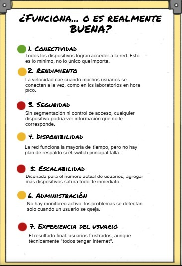
El viaje invisible de un dato
Todos los días usamos servicios digitales sin observar el recorrido que hacen los datos. Cuando un usuario abre YouTube y reproduce un video, se produce un proceso de comunicación entre su dispositivo y distintos servidores, atravesando las siete capas del modelo OSI.
- Física: la información viaja por cable Ethernet, fibra óptica o Wi-Fi.
- Enlace de datos: los dispositivos locales usan direcciones MAC para comunicarse.
- Red: direcciones IP identifican los dispositivos; los routers determinan la ruta.
- Transporte: TCP o UDP permiten la comunicación entre aplicaciones.
- Sesión: se mantiene la comunicación mientras el usuario interactúa con el servicio.
- Presentación: los datos se formatean, y pueden cifrarse o comprimirse.
- Aplicación: aquí interactúa directamente el usuario, vía HTTP/HTTPS.
- Si falla la capa física, no existe una conexión adecuada.
- Si falla el enlace, los dispositivos no logran comunicarse en la red local.
- Si falla la red, los paquetes no encuentran correctamente su destino.
- Si falla el transporte, la comunicación entre aplicaciones se ve afectada.
Esto demuestra que las capas trabajan en conjunto para que una acción tan simple como reproducir un video pueda funcionar.
Reconstruir el recorrido de un dato usando YouTube como ejemplo nos ayudó a conectar las capas del modelo OSI con acciones cotidianas concretas. Entendimos qué rol cumple cada capa —desde el medio físico hasta la aplicación— y qué pasaría si una de ellas fallara, haciendo mucho más tangible un modelo que antes nos parecía solo teórico.
Producto multimodal — Animación interactiva
EntregadoPresiona "Reproducir viaje" para ver cómo un video de YouTube atraviesa las 7 capas del modelo OSI, desde el cliente hasta el servidor.
Si Internet fuera una ciudad, ¿cómo funcionaría?
Para explicar los modelos OSI y TCP/IP a alguien que nunca ha estudiado informática, usamos la analogía de una ciudad: imaginemos que queremos enviar un paquete desde una casa hasta otra ciudad.
El modelo TCP/IP agrupa estas funciones en cuatro capas: acceso a la red, Internet, transporte y aplicación. La analogía permite entender que los modelos no son listas de conceptos, sino formas de organizar las funciones necesarias para que una comunicación pueda realizarse — algo que, como futuros Ingenieros de Sistemas, nos ayuda a explicar conceptos técnicos sin perder su relación con el funcionamiento real.
Usar la analogía de una ciudad para explicar los modelos OSI y TCP/IP nos obligó a traducir conceptos técnicos a un lenguaje cotidiano sin perder precisión. Aprendimos que estas analogías son útiles para comunicar ideas técnicas a personas no expertas, y que TCP/IP simplemente agrupa varias de las funciones que OSI separa en capas independientes.
Producto multimodal — Genially interactivo
Entregado24 horas sin Internet… ¿qué tan dependientes somos?
Imaginemos un escenario que, aunque parece ficticio, podría tener consecuencias serias: el protocolo DNS desaparece completamente durante 24 horas. El DNS (Domain Name System) es el sistema que relaciona nombres de dominio fáciles de recordar con las direcciones IP que localizan servicios en la red — funciona como un "traductor" entre los nombres que usan las personas y las direcciones que necesitan los dispositivos.
Un usuario podría interpretar el problema como una falla total de Internet, aunque físicamente su dispositivo siga conectado a la red. Durante esas 24 horas podrían verse afectados: clases virtuales, plataformas educativas, trabajo remoto, comercio electrónico, banca digital, comunicación empresarial, entretenimiento, almacenamiento en la nube y servicios gubernamentales.
- Detectar el problema: comprobar si existe conectividad con la red.
- Realizar pruebas: usar herramientas como ping, tracert u otras de diagnóstico.
- Comprobar DNS: verificar si las solicitudes de resolución de nombres funcionan.
- Analizar la infraestructura: revisar servidores, configuraciones y routers.
- Buscar alternativas: usar mecanismos de respaldo e infraestructura redundante.
- Recuperar el servicio: restablecer la resolución de nombres y validar el funcionamiento.
Conclusión: si DNS desapareciera durante 24 horas, el problema no estaría en "no poder entrar a una página", sino en la interrupción de múltiples servicios que dependen directa o indirectamente de la resolución de nombres. La sociedad moderna no solo utiliza Internet: depende de ella.
Analizar qué pasaría si el DNS desapareciera durante 24 horas nos hizo ver la dependencia que tenemos de servicios que damos por sentados. Aprendimos a distinguir el impacto técnico, social y profesional de una falla de infraestructura, y a pensar como un equipo de ingeniería: no basta con decir "no hay Internet", hay que diagnosticar, probar y recuperar el servicio de forma metódica.
Herramienta: Claude (Anthropic).
Qué le pedimos: primero, analizar el escenario "24 horas sin DNS" dividido en nivel técnico, social y profesional; después, diseñar la portada del periódico digital (HTML/CSS) con titular, tres secciones y un ícono de conexión interrumpida.
Qué aportó: un primer borrador del análisis y el diseño completo de la portada.
Qué hizo el equipo: verificamos la exactitud técnica sobre DNS, reescribimos partes del texto con nuestra propia voz y decidimos qué destacar en cada sección.
Producto multimodal — Periódico digital
Entregado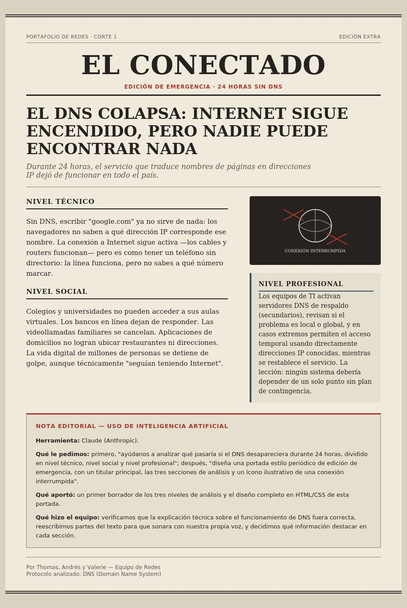
Where does the Internet travel?
Imagine a modern university campus where thousands of students, teachers and administrative workers connect to the Internet every day. The campus has classrooms, laboratories, offices, libraries and common areas.
Fiber optic
Connects the main buildings of the campus: high transmission capacity, ideal for long-distance connections.
Copper cable
Inside classrooms, laboratories and offices, connects computers, printers and IP phones to the network switches.
Wi-Fi
For mobile devices — smartphones, tablets, laptops — giving mobility to students and teachers.
For critical connections, we would consider a wireless point-to-point backup link: if the main fiber connection fails, it keeps communication active between the important areas of the campus. Factors such as distance, physical obstacles, electromagnetic interference and weather conditions determine which medium fits each stretch.
Final reflection: The Internet doesn't travel through a single medium, but through a combination of physical and wireless technologies. As future Systems Engineers, we must consider distance, cost, stability, environmental conditions, security, mobility and future growth — not simply choose the fastest option.
Designing the transmission infrastructure of a university campus let us apply the concepts of guided and unguided media to a real case: combining fiber optic, copper cable and Wi-Fi according to the distance, mobility and stability each area needs. We learned that choosing a transmission medium means balancing several factors — cost, distance, security, mobility — not simply picking the fastest option.
Multimodal product — Interactive game
DeliveredBuild the Smart Campus Network
Drag each connection type onto the zone where it fits best — or tap a tool, then tap a zone.
Zone A — Backbone: Router to Building A / B / C
Zone B — Inside the buildings
Zone C — Outdoor areas & mobile devices
Zone D — Emergency backup link
Drag a connection type onto a zone to test your idea. Wrong guesses are free — try again.
Cost
Copper is the cheapest for short distances. Wi-Fi is affordable for coverage. Fiber costs more but is worth it for the backbone.
Distance
As distance increases, a wireless signal naturally loses strength — that's why fiber, not Wi-Fi, connects the buildings.
Interference
Electromagnetic interference and physical obstacles affect wireless signals more than guided media like fiber or copper.
Stability
Fiber optic is the most stable option. Wi-Fi is the least stable and the most exposed to interference.
Single point of failure
Relying only on the main switch or the fiber backbone could bring down the whole network if it fails — that's why the backup link exists.
Availability
The wireless backup link guarantees availability: one physical failure doesn't isolate an entire building.
Evidencias de aprendizaje
Registro fotográfico de las actividades prácticas realizadas durante el corte.
Pasaporte multisensorial
Ejercicio individual de autoconocimiento: cómo percibe cada integrante sus metas y motivaciones a través de los 5 sentidos.
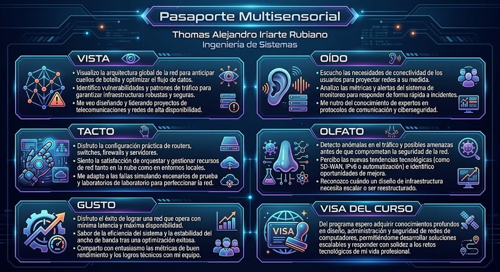
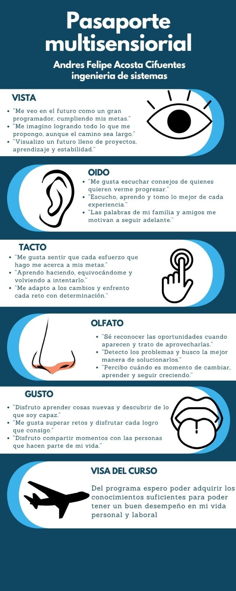
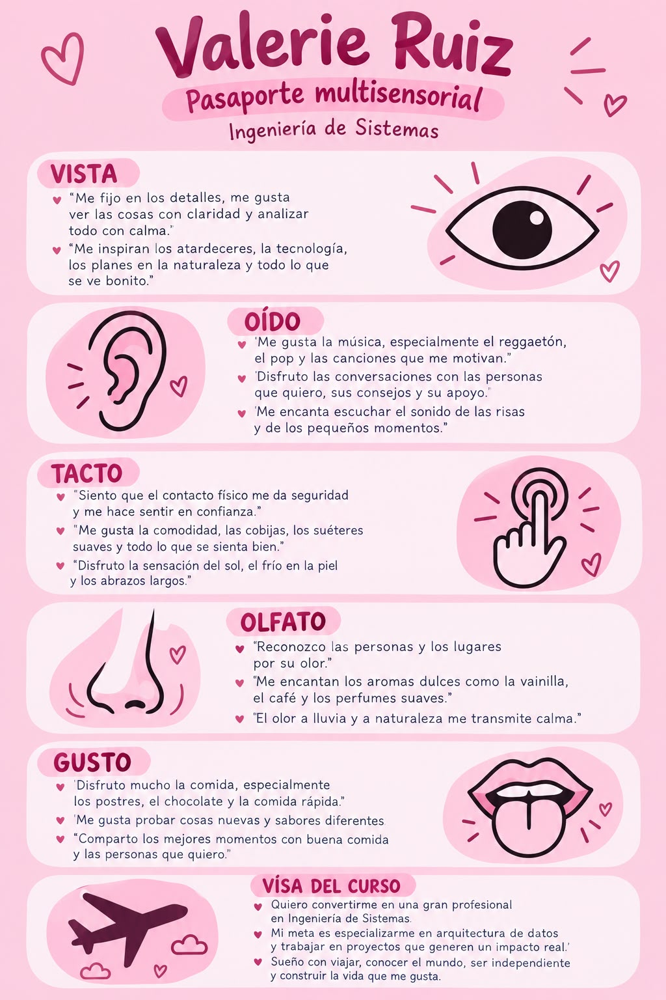
Resumen — "Lo and Behold: El Inicio del Internet"
Apuntes del equipo sobre los personajes y el origen de Internet, vistos en el documental pedido en la Premisa 2.
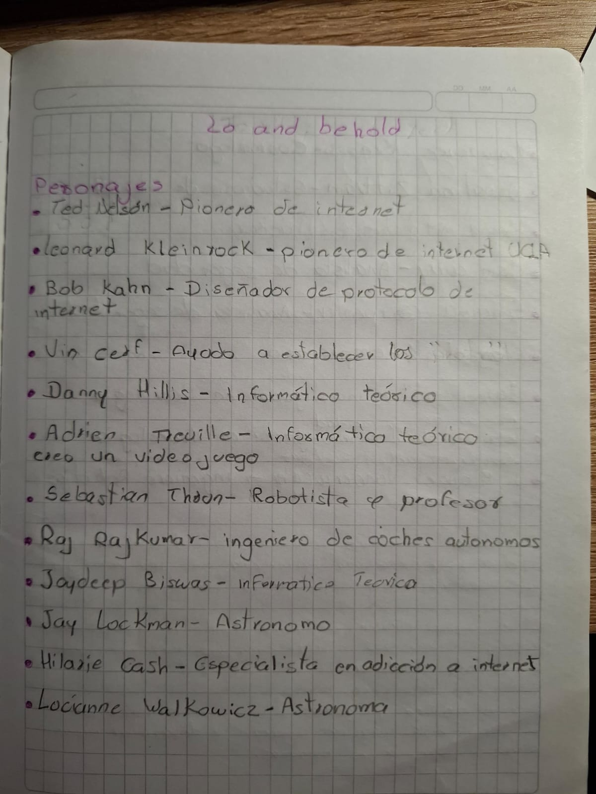
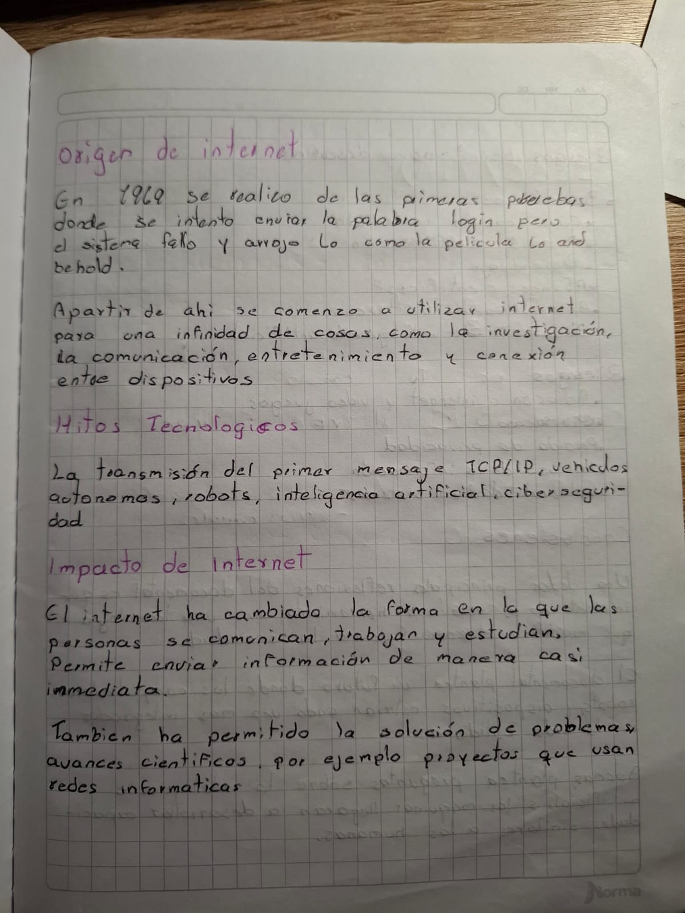
Ponchado de cables
Práctica de terminación de cable UTP: identificación de pares, norma T568B y conexión en patch panel.
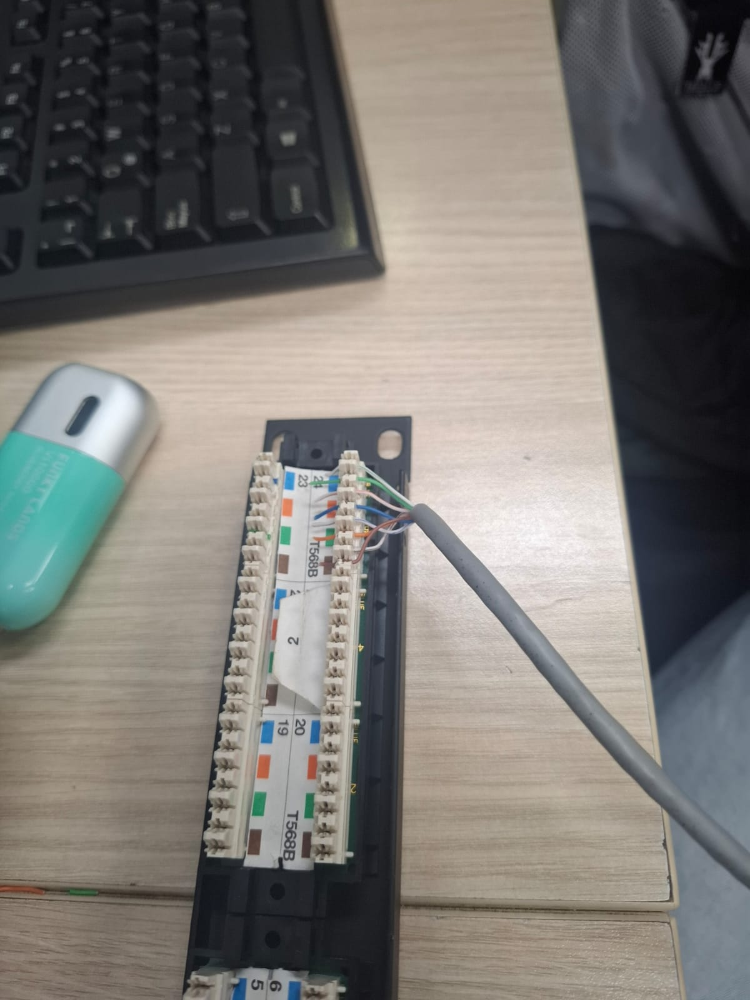
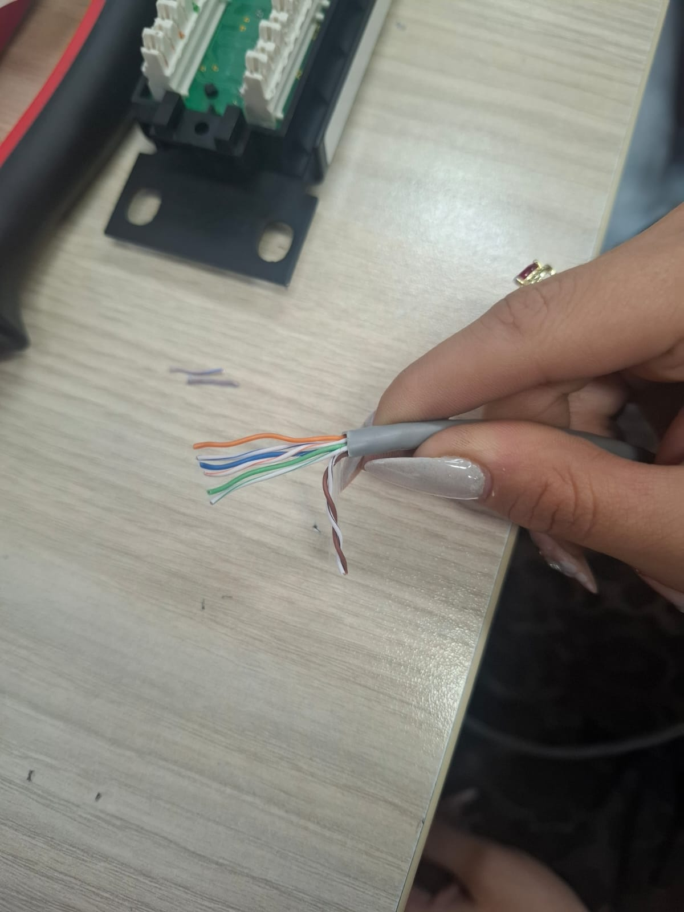
Práctica de Packet Tracer
Ejercicio de simulación: topología con switches, PCs y portátiles interconectados.
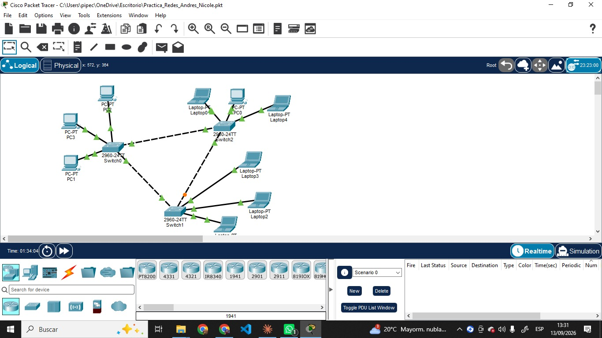
Lista de control
Antes de entregar el portafolio, verificamos cada uno de estos puntos exigidos por la guía del curso. Marca Sí o No en cada fila.
Equipo: Thomas, Andrés y Valerie — Corte 1, 2026-2